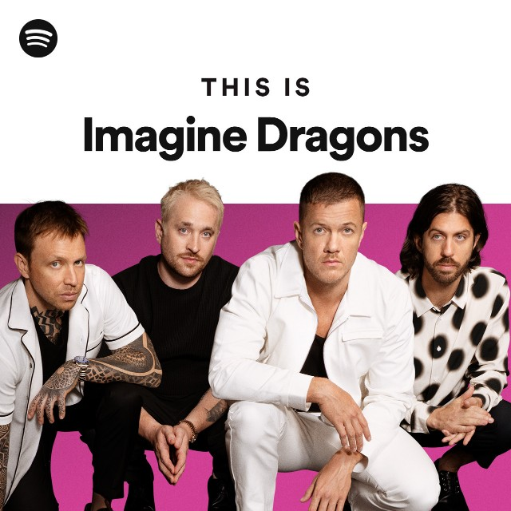

Banda estadounidense de pop rock originaria de Las Vegas, Nevada. Ganó el reconocimiento mundial con el lanzamiento de su álbum de estudio debut Night Visions (2012), y con su canción "It's Time". Billboard los colocó en la cima de su lista de popularidad del 2013 "Year In Rock", y los llamó «la banda revelación del 2013».
La revista Rolling Stone llamó a su canción Radioactive, del álbum Night Visions, «el mayor éxito rock del año». MTV los llamó «la banda revelación del año». "Radioactive" es la segunda canción con más semanas dentro del Billboard Hot 100 en la historia, con un total de 87 semanas. Night Visions alcanzó su punto máximo en el número dos de la lista semanal Billboard 200 y en UK Albums Chart. Su segundo álbum de estudio, Smoke + Mirrors, alcanzó el número uno en los Estados Unidos, Canadá y el Reino Unido.
Ganó dos American Music Awards por "Artista Alternativo Favorito", un premio Grammy a la mejor interpretación rock, cinco premios Billboard Music Awards y un premio World Music Award. En mayo de 2014, la banda obtuvo un total de catorce nominaciones en diferentes categorías en los Billboard Music Awards, incluyendo "Top Artist of the Year" y un Milestone Award, el cual reconoce la innovación y la creatividad de varios artistas a través de diferentes géneros. Hasta enero de 2017, Imagine Dragons había vendido 9 millones de copias de sus álbumes, y 27 millones en sencillos.
Grandes éxitos de Imagine Dragons
| Año | Album |
|---|---|
| 2021 | Mercuri |
| 2018 | Origins |
| 2017 | Evolve |
| 2015 | Smoke + mirrors |
| 2012 | Night Visions |
| Night Visions, es el álbum de debut de Imagine Dragons | |